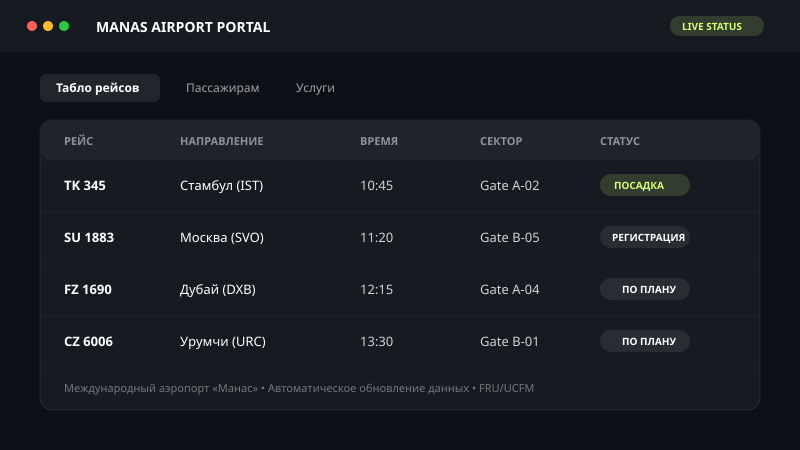

Национальный проект

Международный аэропорт «Манас»
Проектирование и разработка интерфейсных решений главной воздушной гавани Кыргызской Республики. Фокус на интуитивном UX для пассажиров: информационная архитектура рейсов, сервисы аэропорта, оптимизированная навигация и адаптивность под все типы мобильных устройств.
UI/UX Дизайн
Figma
Инфо-архитектура
HTML5 / CSS3 / JS
Адаптив